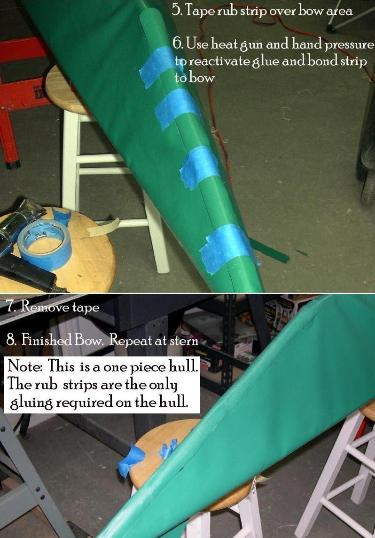

| Covering The Hull (6 of 6) | Menu Previous Page Next Page |
|  |
Covering the stems (Rub Strip)
10. Position the rub strip over the stem and hold in place with masking tape. Use a heat gun to reactivate the cement and apply pressure. Start at the keel to stem transition, and work your way towards the end of the stem.
11. Remove the masking tape, apply more heat and pressure until a good bond is achieved. Repeat this process at the stern. A straight stem like the one pictured is easier to work with since the rub strip doesn't follow a curve as well. The one piece hull is now complete. It's time to turn the kayak over and begin the deck skinning process.
|